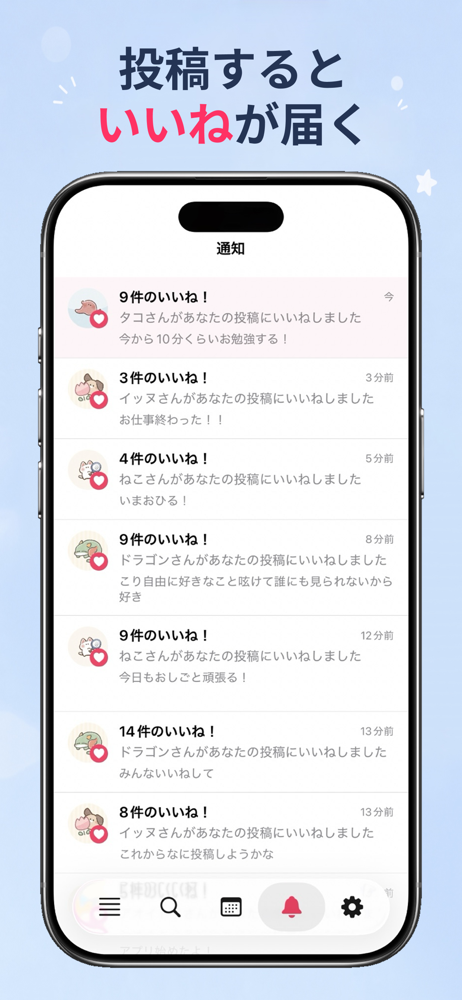
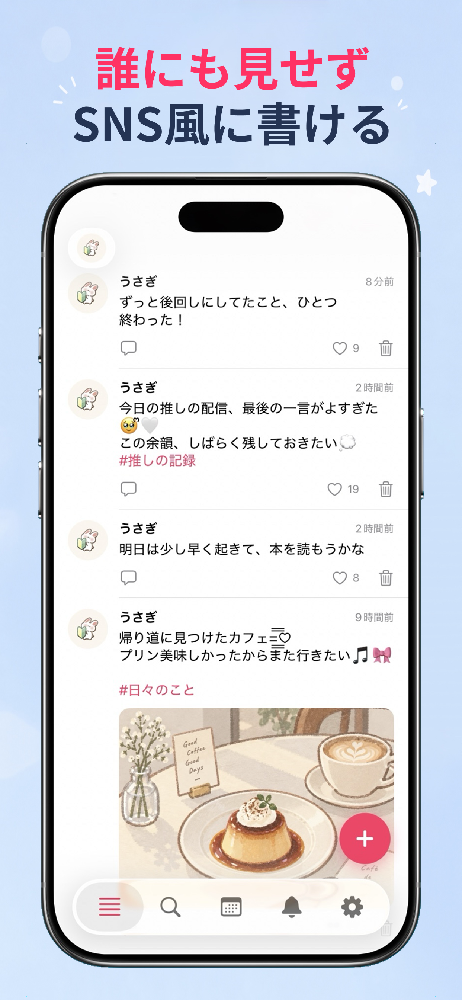
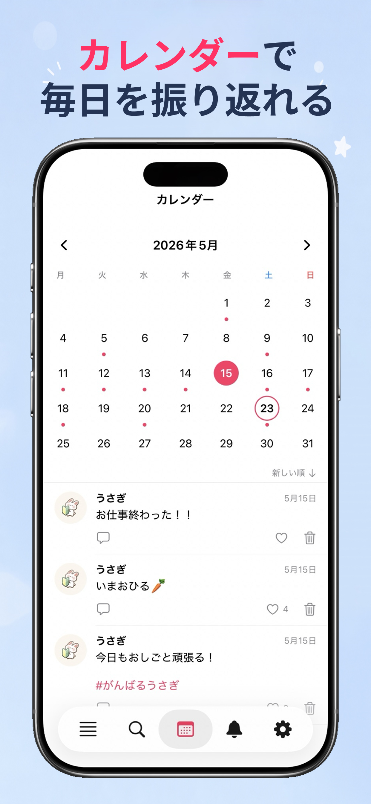
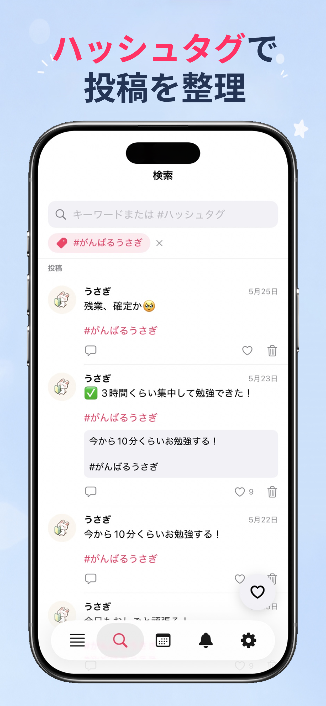
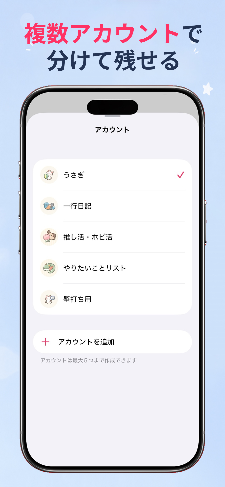
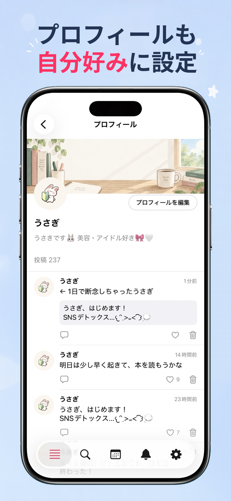
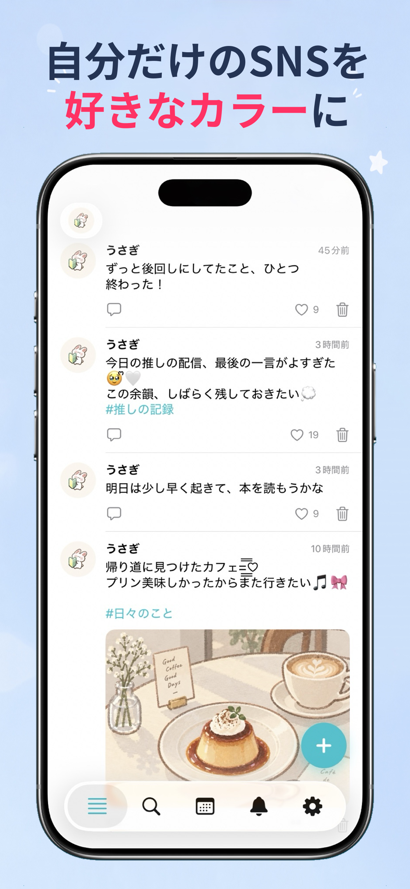

01
テキスト・画像投稿
テキストや画像を投稿して、自分だけのタイムラインを作れます。複数枚の画像もまとめて添付可能。
わたし専用の、SNS風メモアプリ。
ティアメモは、誰かに見せるためじゃない。
自分のためのタイムラインを作れる
プライベートなSNS風メモアプリです。


01 / FEATURES
わたし専用のSNS風のメモ日記をつくろう。
書く、残す、振り返る。気軽に、あなたらしく。
テキストや画像を投稿して、自分だけのタイムラインを作れます。複数枚の画像もまとめて添付可能。
投稿に #タグ を付けるだけで自動認識。検索タブから絞り込み表示できます。
投稿に追記を重ね、アイデアをどんどん深掘りできます。追記への追記も無限に可能。
投稿後、一定時間内に自動でいいねが付与されます。設定画面からON/OFFの切り替えができます。
自動いいねが付くと通知タブに通知が届きます。未読は薄ピンク背景でひと目でわかります。
キーワード・ハッシュタグ・いいね済み投稿で絞り込み検索できます。過去の投稿にすぐアクセス。
画像タップでフルスクリーン表示。ピンチズーム（最大4x）・横スワイプのページングに対応。
アイコン・名前・自己紹介を設定できます。アイコンはクロップUIで正方形にトリミング可能。
投稿の全削除・期間指定削除に対応。大切なデータを整理してアプリをすっきり保てます。
02 / SCREENSHOTS





ティアメモは投稿データをデバイス内にローカル保存しています。アプリのアンインストールや「すべての投稿を削除」を行った場合、データは復元できません。機種変更時のデータ引き継ぎには、プレミアムプランのiCloudバックアップ機能をご利用ください。
iCloudバックアップはプレミアムプランの機能です。プレミアムプラン加入後、設定画面の「データ管理」→「バックアップ」からトグルをONにしてください。設定変更はアプリ再起動後に反映されます。
アプリの「設定」→「プレミアム」セクションをご確認ください。未反映の場合は、同じApple IDで購入手続きを再度お試しください（すでに購入済みの場合、二重課金にはなりません）。
無料プランの文字数制限は全角150字・半角300字（固定）です。また、アプリ全体で使用できるハッシュタグは累計10個までとなります。ハッシュタグを含まない投稿は累計数に関わらず常に投稿できます。プレミアムプランでは文字数制限のカスタム設定（最大全角2,000字）とハッシュタグ無制限が利用できます。
無料プランでは、アプリ全体のハッシュタグ累計使用数が10個を超えると、ハッシュタグを含む新規投稿がブロックされます。ハッシュタグを含まない投稿は引き続き可能です。ハッシュタグを無制限に使いたい場合はプレミアムプランへのアップグレードをご検討ください。
投稿後、一定時間内に自動でいいねが付与される機能です。いいねが付与されると通知画面に通知が届きます。設定画面の「投稿設定」→「自動いいね」からON/OFFを切り替えられます。
投稿カード下部の吹き出しアイコンをタップすると、追記を入力するシートが開きます。追記に対してさらに追記することも可能（ネスト構造）です。追記には自動いいねは付与されません。
削除した投稿は復元できません。削除の際は確認ダイアログが表示されますので、ご注意の上操作してください。削除時に関連する追記・通知も同時に削除されます。
05 / SUPPORT
ご不明点・ご要望はお気軽にご連絡ください。
お問い合わせはメールにて受け付けています。アプリのバージョン・iOS バージョン・具体的な状況をご記載いただくとスムーズに対応できます。
albedtree222[at]gmail.comYOUR OWN TIMELINE
ティアメモ / iOS 18.0 以降対応